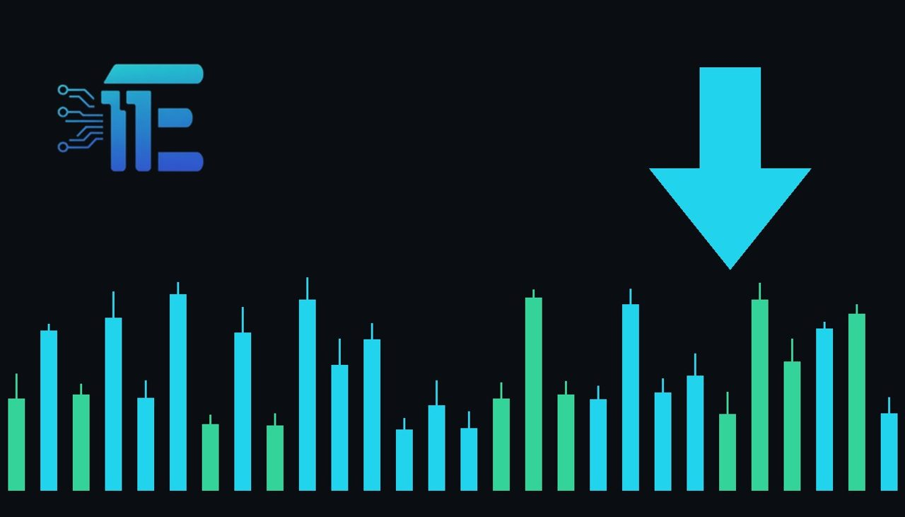

Gold Slips as Investors Await U.S. Inflation Dataមាសធ្លាក់ចុះបន្តិច εν ពេលអ្នកជួញដូររង់ចាំទិន្នន័យអតិផរណាអាមេរិក
XAU/USD impact: ▼ Bearishផលប៉ះពាល់លើ XAU/USD: ▼ ធ្លាក់

តម្លៃមាសបានធ្លាក់ចុះបន្តិចដោយសារអ្នកជួញដូរកត់ត្រាប្រាក់ចំណេញបន្ទាប់ពីការកើនឡើងខ្លាំង។ ពេលនេះទីផ្សារកំពុងផ្ដោតលើទិន្នន័យអតិផរណាអាមេរិក ដើម្បីរកតម្រុយអំពីគោលនយោបាយអត្រាការប្រាក់របស់ Fed ។
តម្លៃមាសបានធ្លាក់ចុះបន្តិចដោយសារអ្នកជួញដូរកត់ត្រាប្រាក់ចំណេញបន្ទាប់ពីការកើនឡើងខ្លាំង។ ពេលនេះទីផ្សារកំពុងផ្ដោតលើទិន្នន័យអតិផរណាអាមេរិក ដើម្បីរកតម្រុយអំពីគោលនយោបាយអត្រាការប្រាក់របស់ Fed ។
Gold prices edged lower on Tuesday as market participants engaged in profit-taking following a robust rally in the previous session. The minor pullback comes as attention shifts decisively toward upcoming U.S. inflation data, which is expected to provide critical clues regarding the Federal Reserve's future monetary policy path.
តម្លៃមាសបានធ្លាក់ចុះបន្តិចកាលពីថ្ងៃអង្គារ ខណៈដែលអ្នកចូលរួមក្នុងទីផ្សារបានដកប្រាក់ចំណេញបន្ទាប់ពីការកើនឡើងយ៉ាងខ្លាំងក្នុងវគ្គមុន។ ការធ្លាក់ចុះបន្តិចនេះកើតឡើងនៅពេលដែលការយកចិត្តទុកដាក់បង្វែរទៅរកទិន្នន័យអតិផរណាអាមេរិកនាពេលខាងមុខ ដែលរំពឹងថានឹងផ្ដល់នូវតម្រុយសំខាន់ៗទាក់ទងនឹងទស្សនវិស័យគោលនយោបាយរូបិយវត្ថុរបស់ធនាគារកណ្តាល Fed ។
The transmission channel to XAU/USD operates primarily through shifting interest rate expectations and the U.S. dollar. Higher inflation prints typically complicate the Federal Reserve's easing cycle, potentially strengthening the dollar and raising real yields, which tends to weigh on non-yielding bullion. Conversely, softer inflation figures often weaken the greenback and lower yields, enhancing the appeal of precious metals as an inflation hedge.
ច្រកបញ្ជូនទៅកាន់ XAU/USD ដំណើរការជាចម្បងតាមរយៈការផ្លាស់ប្តូរការរំពឹងទុកអត្រាការប្រាក់ និងតម្លៃប្រាក់ដុល្លារអាមេរិក។ ទិន្នន័យអតិផរណាខ្ពស់ជាទូទៅធ្វើឱ្យវដ្តនៃការបន្ធូរបន្ថយរបស់ Fed កាន់តែស្មុគស្មាញ ដែលអាចពង្រឹងប្រាក់ដុល្លារ និងដំឡើងអត្រាផលចំណបុលប័ណ្ណពិតប្រាកដ ដែលជាកត្តាដាក់សម្ពាធដល់មាស។ ផ្ទុយទៅវិញ តួលេខអតិផរណាស្រទន់ច្រើនតែធ្វើឱ្យប្រាក់ដុល្លារខ្សោយ និងទម្លាក់អត្រាផលចំណេញ ដែលបង្កើនភាពទាក់ទាញនៃលោហធាតុមានតម្លៃជាទ្រព្យការពារអតិផរណា។
From a balanced perspective, a higher-than-expected inflation reading would likely pressure gold prices by reinforcing the case for tighter monetary conditions. On the other hand, cooler price pressures would support gold by bolstering expectations for potential Federal Reserve rate cuts and reducing the opportunity cost of holding bullion.
ពីទស្សនៈមានតុល្យភាព ការបោះពុម្ពអតិផរណាកើនឡើងខ្ពស់ជាងការរំពឹងទុកទំនងជាដាក់សម្ពាធលើតម្លៃមាស ដោយសារការគាំទ្រដល់លក្ខខណ្ឌគោលនយោបាយតឹងរ៉ឹង។ ម្យ៉ាងវិញទៀត សម្ពាធតម្លៃធូរស្រាលនឹងគាំទ្រដល់មាសតាមរយៈការពង្រឹងការរំពឹងទុកសម្រាប់ការកាត់បន្ថយអត្រាការប្រាក់របស់ Fed និងការកាត់បន្ថយការចំណាយឱកាសនៃការកាន់កាប់មាស។
Traders should closely monitor the upcoming consumer price index release and subsequent commentary from Federal Reserve officials. These data points will heavily influence currency valuations, bond yields, and short-term market momentum for XAU/USD.
អ្នកជួញដូរគួរតែតាមដានយ៉ាងដិតដល់នូវការប្រកាសសន្ទស្សន៍តម្លៃទំនិញអតិផរណា និងមតិយោបល់ជាបន្តបន្ទាប់ពីមន្ត្រី Fed ។ ចំណុចទិន្នន័យទាំងនេះនឹងមានឥទ្ធិពលយ៉ាងខ្លាំងទៅលើតម្លៃរូបិយវត្ថុ អត្រាផលប័ណ្ណបំណុល និងសន្ទុះទីផ្សាររយៈពេលខ្លីសម្រាប់ XAU/USD ។
Key takeawaysចំណុចសំខាន់ៗ
- Gold prices retreated due to profit-taking following a strong previous session.
- តម្លៃមាសបានថយចុះដោយសារការដកប្រាក់ចំណេញបន្ទាប់ពីវគ្គកើនឡើងខ្លាំង។
- Market focus centers on upcoming U.S. inflation data for Federal Reserve policy clues.
- ការផ្តោតអារម្មណ៍របស់ទីផ្សារគឺលើទិន្នន័យអតិផរណាអាមេរិកសម្រាប់តម្រុយគោលនយោបាយ Fed ។
- Traders are watching currency valuations, bond yields, and central bank commentary for directional cues.
- អ្នកជួញដូរកំពុងតាមដានតម្លៃរូបិយវត្ថុ អត្រាផលប័ណ្ណ និងការអត្ថាធិប្បាយរបស់ធនាគារកណ្តាល។
Original commentary by THE MARKET CODE, based on public reporting from Yahoo! Finance: GC=F News. Written with the help of AI. Educational only, not financial advice.
មតិវិភាគដើមដោយ THE MARKET CODE ផ្អែកលើការរាយការណ៍សាធារណៈពី Yahoo! Finance: GC=F News។ សរសេរដោយមានជំនួយពី AI។ មាតិកាអប់រំប៉ុណ្ណោះ មិនមែនជាដំបូន្មានហិរញ្ញវត្ថុទេ។